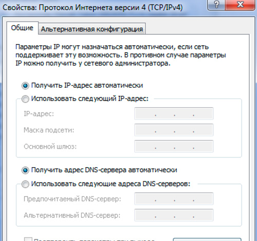

Основы клиент-серверного взаимодействия
Шлейко Александр
Основы клиент-серверного взаимодействия
Шлейко Александр Нетология
Шлейко Александр
программист «Tessella Studio»
Как работает интернет?

Интернет представляет собой (с учетом определенных упрощений) сеть соединенных между собой компьютеров без определенного центра. Если отбросить роутеры, то каждый компьютер в сети имеет свой уникальный ip адрес
IP-адрес - сочетание из четырех (для IPv4) цифр от 0 до 255. IP адрес может быть привязан к оборудованию (номеру сетевой карты, защитой производителем).
Есть и технические ip-адреса, например, 127.0.0.1 (на картинке) всегда указывает на текущий компьютер
Вывод:
Таким образом, зная ip-адрес, мы всегда обратимся к одному, вполне определенному, физическому, компьютеру в сети. В сети интернет, запросы на самом деле идут с нашего (клиентского) компьютера на те или иные ip адреса.
Однако, в реальности через браузер мы вводим что-то вроде http://netology.ru/. Как это работает?
Domain Name System

Domain Name System
Единственное назначение системы доменных имен (или DNS) - преобразовывать доменные имена (yandex.ru, google.com) - в ip
адреса.
Таким образом, после того, как мы вбили в строке браузера привычный адрес любимой социальной сети, браузер сначала делает запрос на DNS сервер, преобразует доменное имя к ip адресу, к которому и пойдет запрос
Возможно, вы видели в настройках соединения вашей операционной системы пункт, касающийся адресов DNS серверов - это как раз о том, куда браузер будет обращаться с тем, чтобы преобразовать домен в ip адрес.

Протокол HTTP
После того, как мы нашли в сети компьютер, с определенным ip адресом, встает вопрос о том, как объяснить ему, что нам надо и получить от него нужную информацию.
Для этого могут быть использованы различные протоколы (FTP, IMAP, и т.д.)
Для передачи веб-страниц с сервера на наши с вами компьютеры используется протокол HTTP - протокол передачи гипертекста.
Гипертекстом называется текст веб-страниц за счет ссылок, расположенных на них - "порталов" на другие страницы.
Задачи, которые решает протокол HTTP
- Собственно, передача содержимого веб-страниц
- Передача информации о результате запроса: все ок, или страница не найдена, либо нет прав и т.п.
- Передача "заголовков" технической информации, влияющей на дальнейшую "судьбу" пользователя - установка браузером cookies, информация о кодировке и т.п.
- Со стороны клиента - помимо самого запроса: передача данных, загрузка файлов и т.п.
- И не только...
 На самом деле, когда мы, занимаясь веб-разработкой
говорим "сервер", мы подразумеваем вовсе не какой-то суровый суперкомпьютер, а лишь набор программного обеспечения, способный взаимодействовать по протоколу HTTP.
На самом деле, когда мы, занимаясь веб-разработкой
говорим "сервер", мы подразумеваем вовсе не какой-то суровый суперкомпьютер, а лишь набор программного обеспечения, способный взаимодействовать по протоколу HTTP.
В качестве операционной системы для веб-сервера, в большинстве своем, используется Linux.

Варианты дальнейшей начинки могут различаться.
Это может быть классическая связка Apache+PHP+Mysql, образуя вместе с линуксом аббревиатуру "lamp".
Возможны и другие сочетания:
Это может быть и, например, сочетание nodejs+mongodb.
Сервер
Важно, что при любом составе пакета, какая-то часть из пакета отвечает за то, чтобы слушать и обрабатывать входящие запросы (определять, что именно запрошено) - другая, при запросе обрабатывает написанные скрипты, третья - отвечает за чтение и запись в базу данных.
В случае lamp:
- Apache обрабатывает входящие запросы
- PHP - интерпретатор обрабатывает написанные для сервера скрипты
- MySql работает с БД

Раз "сервер" - это программное обеспечение, то значит, мы не ограничены ни Linux, ни чем-то еще другим. И вот действительно, несколько пакетов, с помощью которых можно настроить локальный сервер на windows-машине и работать с ним.
Backend/frontend

Backend
Итак, сервер получил запрос от клиента. В качестве ответа (так как мы с вами взаимодействуем в протоколе HTTP) будет, скорее всего, гипертекст (html).
Систему различных скриптов, которые позволяют формировать ответ сервера на разные запросы клиентов (различные ссылки) и называется backend'ом веб-приложения.
Например, скрипт, который выводит теущее время на php может выглядеть так:
?php echo date("Y-m-d H:i");
Frontend

Frontend
Кроме формирования различных страниц на сервере, есть возможность "оживить" наше веб-приложение на клиенте. За это отвечает javascript.
Javascript коды можно писать самому, размещая их в тегах
Можно (и нужно) также пользоваться готовыми библиотеками, которые зачастую "из коробки" имеют функционал, на самомстоятельную разработку которого понадобиться куча времени.
Для установки таких библиотек часто достаточно выполнить несложные инструкции, как тут: http://fotorama.io/set-up/
Задавайте вопросы и напишите отзыв о лекции!
Шлейко Александр